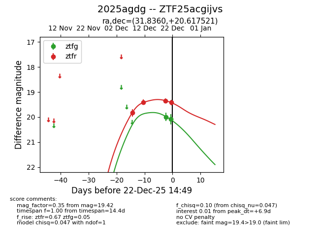
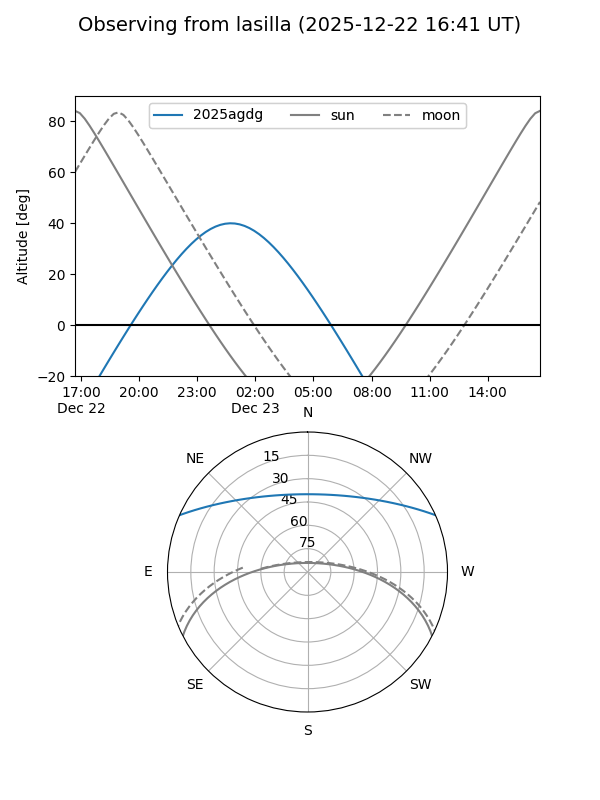
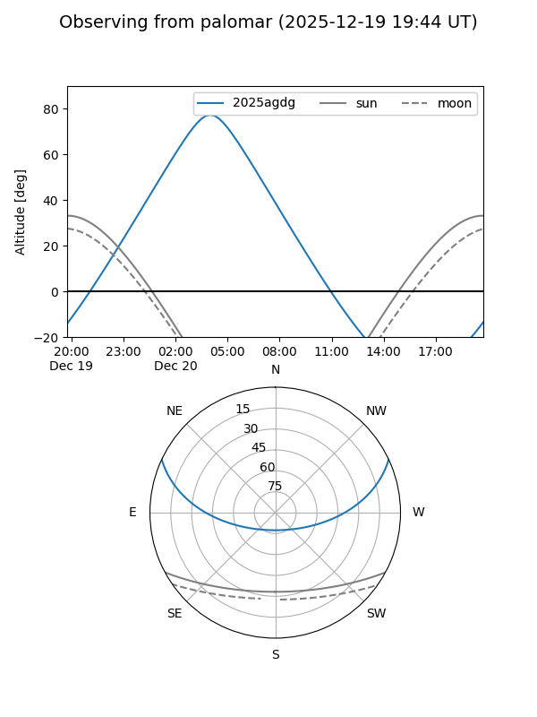
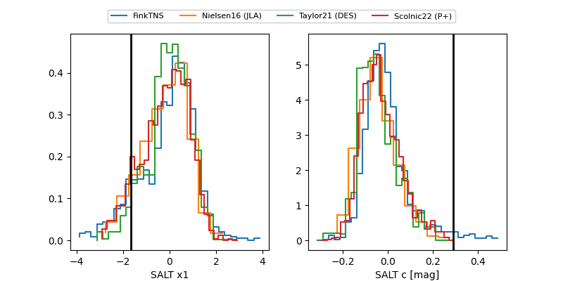

2025agdg
Target 2025agdg at 2025-12-20 03:59
Aliases and brokers:
FINK: fink-portal.org/ZTF25acgijvs
Lasair: lasair-ztf.lsst.ac.uk/objects/ZTF25acgijvs
ALeRCE: alerce.online/object/ZTF25acgijvs
TNS: wis-tns.org/object/2025agdg
YSE: ziggy.ucolick.org/yse/transient_detail/2025agdg
alt names
ZTF25acgijvs (ztf,fink_ztf)
2025agdg (tns,yse)
Coordinates:
equatorial (ra, dec) = 31.8360,+20.61752
equatorial (HMS+DMS) = 02:07:20.63,+20:37:03.08
galactic (l, b) = (145.9330,-38.84019)
Flags:
Photometry:
last ztfr=19.35
3 ztfr detections
Lightcurve

Visibility


Additional plots
